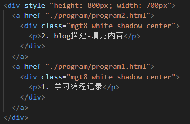

2. blog搭建-填充内容
友情提示：此文章为本网站搭建的缩影，不一定是正确方式
在用html和css布局后，网站初步具备一个可观的模型，但没有内容，也不可以点击。
如何把内容填充到这些空盒子的背后？
（QAQ这里困扰了我好久！）
复制+超链接
（1）将首页的html复制多个，这样就有了一致的模板，再进行改动，变成不同的样式。
（2）布置盒子，上超链接。
（超链接真是一个伟大的发明！）
注：此处是先建了一个大盒子，再在大盒子里面用a标签
而a标签内部的div标签作用是使链接显示的方式呈现为整个盒子（也就是方块可以点击）
（3）通过超链接跳转到一个新的html文件，在这里可以写字，然后就可以生成一篇文章啦。
困惑的原因：
（1）认为建blog只用一个网页
（2）不知道如何引入没有生成网址的html
（3）不知道上线网站后如何处理版本更新问题
（4）想太多！
我预设会遇到的困难：————————————————————————————
实际上：——————————
（大家还是要多动手，勇敢验证自己的想法QWQ）